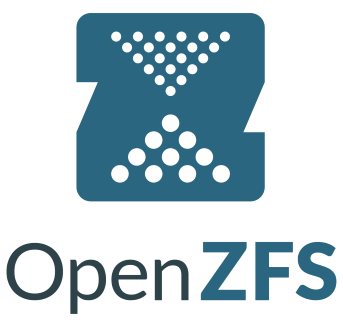

Tuesday 03 Jan 2023
ZFS

To maintain a secure long-term back-up I use ZFS - it's a file system run from FreeBSD or Linux to manage files. I am running OpenZFS on Ubuntu server.
Copy-on-write
An important feature of the file system is copy-on-write. This means that if I create a new version of the file, the orginal will remain in place (provided you have set-up regular snapshots).
Snapshots
I create regular snapshots of my data sets to return accidently deleted files. This simple command suffices:
zfs snapshot pool/dataset@today
Creating snapshots will not use additional disk space, but if you delete a file that is within a snapshot, then the space will not be reallocated.
Integrity checks (scrub)
Essential feature to prevent bitrot. The scrub program will test every block's hash to ensure the file has not been changed. If there is corruption, then ZFS will restore the block from a redundant hard drive if you are running in a pool. It is recommended to run ZFS on at least two hard drives.
zpool scrub pool
Where pool is the name of your pool
Encryption
ZFS allows you to encrypt datasets. This is encryption at rest, so if the device is stolen your data would not be accessible. I use encryption with a passhrase, however ZFS can be configured to auto mount.
Redundancy / Pooled Storage
To prevent loss of data from a hard drive failure, you can set-up pools to span multiple disk. I use ZFS in mirror, which means I have two hard drive mirrored the same. You can add additional drives to expand the pool. However, once you add drives to create new VDEVs, you cann go back. For example, I run two hard drives pool together in one VDEV. If I wanted more storage, to protect data, I would need to add two hard drives and create a new VDEV. I created the pool by using this command:
zpool create pool mirror /dev/disk/by-id/xyz /dev/disk/by-id/abc
How I use ZFS
All my data from all devices are backed up to my network attached storage computer. This forms a long-term backup. The computer is attached to a battery backup with surge protection, and unplugged when not in use. It's turned on weekly or more often to run my backup scripts.
Everytime the backup script is run, a snapshot is created of each dataset.
Every 2 weeks, I will run the scrub command to check for corruption.
I do not trust one device, so the pool is backed up to 2 external hard drives on a rotation. In addition, important data such as pictures and documents are stored in the cloud.
I monitor ZFS using the status page and list (to check dataset size usage)
zpool status
zfs list
Conclusion
ZFS is an advanced powerful file system. With it's many advantages, I use this file to preserve data integrity and maintain my primary back-up.
Copyrights:
{kind=link}
Backlinks: Computing Computing:Backup Journal:Index Journal:2023:01